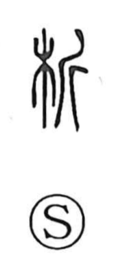

析

Kun: saku, wakatsu | On: seki
to split ・ to analyze
Explanation
Composed of 木 “wood” and 斤 “axe,” the character originally pictures a tree being chopped apart. In early usage it evoked the cutting of firewood, which had ritual importance; bundles of sticks were even set afloat for divination. From this concrete image of splitting timber, the sense broadened to the careful dividing and distinguishing of things in thought, giving rise to the later meaning “to analyze.”